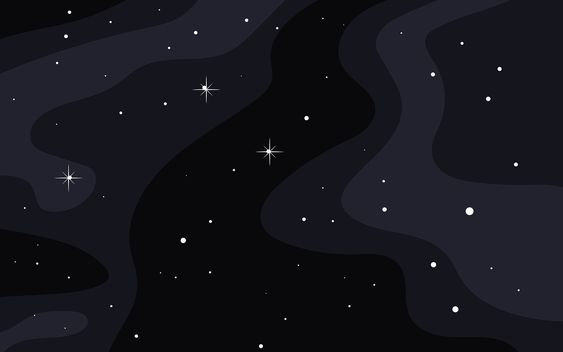

Choosing the path of a guardian, you take on the responsibility of safeguarding the secrets within our solar system as you navigate the Stellar Nexus. Soon, your vigilance pays off as you intercept a signal indicating potential threats from an unidentified alien faction known as the Shadow Brood. Now faced with a crucial decision, you must choose:
